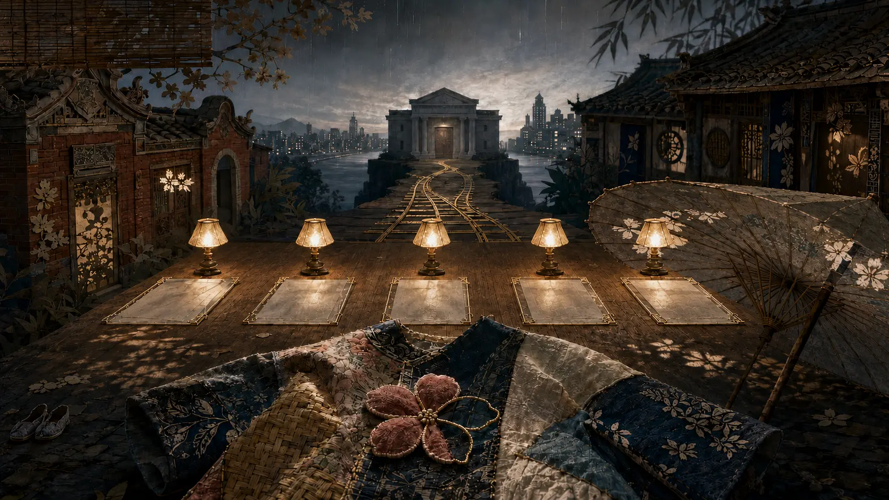

被害を再現せず、環境、記録、灯、静かな余白に問いを残します。

観察型調査ドキュメンタリー · 司法資料の検証 · 文学的インタラクティブ長編
姿は見えていた。
それでも、保護にはつながらなかった
シュエンシュエン事件｜5回の警告、2つの都市、そして完了しなかった安全確認
司法手続を追跡中・裁判所による公開期日の発表待ち
四言語特集・累計閲覧…回
READING PROTOCOL · ART DIRECTION
記録の光を見分けてから、
物語の影へ入る
本特集は観察型ドキュメンタリーの抑制を保ち、公開された司法情報で手続を照合し、文学的な転換は読者を導くためだけに用います。「確認済みの事実」「機関の説明」「未解明の点」を区別し、物語を証拠の代わりにせず、悲しみを刑事責任の予断に変えません。
起訴は有罪判決ではありません。個人の責任は裁判所の最終判断によります。
章のフェード、視差、微光は情報を隠さず、読解にだけ奉仕します。
確認済みの事実機関の説明未解明
事件は移管できても、責任を宙に浮かせてはならない。
移管はできる。しかし、安全確認より先に手を離してはならない。

CHAPTER 01 · FIVE SIGNALS
彼女は、見えなかったのではない
公開情報が示すのは、制度の外にいた子どもではなく、通報と支援の視野に繰り返し入っていた子どもです。一つひとつの警告は灯った窓でした。問われるのは、その光を誰かが一つの危険として読んだかどうかです。
一度見ることは、保護を完了することではない。警告が重なれば、リスクは引き上げられるべきで、ゼロに戻してはならない。

CHAPTER 02 · CLASSIFICATION
分類された一件の通報
制度に分類は必要ですが、分類が判断に代わることはできません。項目、リスク区分、照会は保護の出発点にすぎません。子どもがどこにいるのか、誰が世話をしているのか、直接会って安全を確認したのか。その答えを様式から消してはなりません。
分類は手続きを導いても、誰が問いを止めてよいかを決めてはならない。

CHAPTER 03 · TWO CITIES
子どもは台中に、案件は台南へ戻った
広域案件では、行政上の管轄と子どもの現場との間に断絶が生まれやすくなります。書類が移動しても、危険は停止しません。送り手と受け手の間で、確認の輪を閉じる責任者が必要です。
引継ぎが完了するのは、送付した時ではない。受理され、子どもに会い、その時点の安全が確認された時です。

CHAPTER 04 · THE UNFINISHED CHECK
手続きは進んだ。それでも保護は完了しなかった
通報、振分け、移管、連絡には記録が残ります。しかし手続きの目的は、書類を次の部署へ届けることではなく、子どもを安全へ届けることです。最後の安全確認がなければ、行政記録が揃っていても欠落は残ります。
「実施した」と「保護できた」は同じではない。確認すべきは手順だけでなく結果です。

CHAPTER 05 · ONE RISK PICTURE
5回の救援信号は、なぜ一つの答えにならなかったのか
一つの情報は断片に見えるかもしれません。同じ懸念が重なるなら、一つのリスク像として蓄積されるべきです。通報、機関、都市を越えて照合し、担当者が小さな一片だけを見る状態を終わらせなければなりません。
欠けた一片は、すべての警告を統合し、最終判断に責任を持つ明確な主体です。

CHAPTER 06 · ACCOUNTABILITY
最後の一歩を完了するのは誰か
責任は、規定通り処理したかだけでは測れません。誰が受理を確認し、誰が子どもに直接会い、誰が過去の警告を統合し、引継ぎの失敗を誰が引き上げ、完了を誰が監督したのでしょうか。
必要なのは責任の境界線だけではない。引継ぎの途中で子どもが消えない保護の道です。
VERIFICATION NOTES · PUBLIC SOURCES
検証注記
本ページでは、起訴内容を「検察の主張」、自治体・機関の回答を「機関の説明」として扱います。有罪かどうかと個人の最終的な刑事責任は裁判所の判断によります。公開期日が確認できた時点で、日付と法廷を追記します。
KEEP WATCHING · OPEN JUSTICE
公開の審理を待ち、
問いへの完全な答えを求めます
法令の範囲内で裁判所が公開期日と手続情報を公表することを期待し、司法の進展を継続して整理します。注視することは、誰かの責任を先に決めることではありません。公開性、適正手続、児童保護制度の改善を守るためです。
CURRENT STATUS
開廷期日：裁判所の公開情報を待っています｜本ページは継続更新
注：本特集は公開情報を基に制度上の論点を整理したものです。起訴は有罪判決を意味せず、個人の刑事責任は最終的な裁判所判断によります。児童のプライバシー保護のため仮名と象徴的な芸術表現を用い、個人を特定できる画像や傷害画像は掲載しません。最終更新：2026年8月14日。